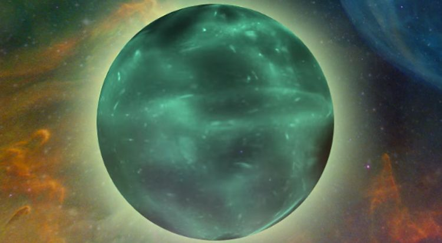

Dziwne gwiazdy - ciała z dziwnych kwarków
Czym są dziwne gwiazdy?
Dziwne gwiazdy to hipotetyczne obiekty astronomiczne, które składają się z dziwnej materii, znanej jako materia dziwna. Materia dziwna składa się z kwarków dziwnych, które są trudnymi do zaobserwowania cząstkami elementarnymi. Dziwne gwiazdy mogą mieć niezwykłe właściwości, takie jak gęstość większa niż w przypadku gwiazd neutronowych, a także stabilność i trwałość. Istnienie tych obiektów jest nadal przedmiotem badań naukowych i wymaga dalszych obserwacji i eksperymentów, aby lepiej zrozumieć ich naturę i potwierdzić ich istnienie.
Jak powstają?
Powstawanie dziwnych gwiazd jest teoretycznym scenariuszem, który zakłada, że w skrajnych warunkach gęstości i temperatury, normalna materia może ulec przemianie w materię dziwną. W procesie formowania się dziwnych gwiazd, zwykłe jądro gwiazdy, składające się z protonów i neutronów, ulega transformacji, a kwarki dziwne stają się dominującymi składnikami. To przekształcenie prowadzi do powstania struktury, w której materia dziwna jest obecna we wnętrzu gwiazdy. Jednak proces powstawania dziwnych gwiazd jest nadal obiektem badań i wymaga dalszych badań teoretycznych oraz ewentualnych obserwacji, aby potwierdzić tę hipotezę.